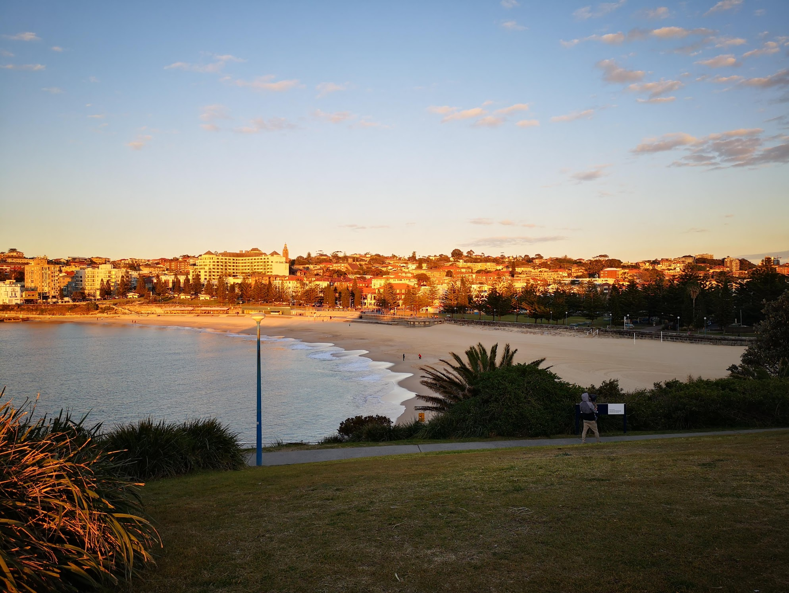
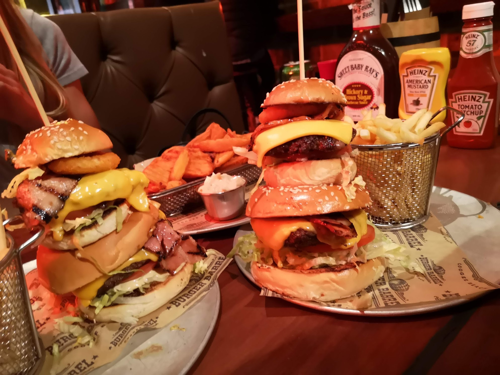
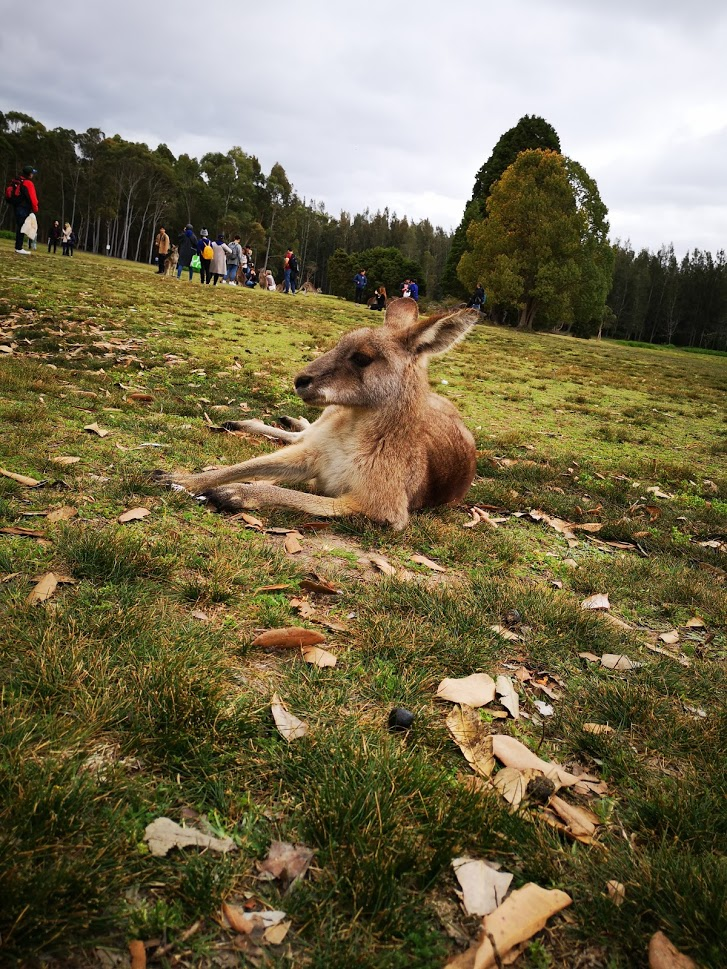

My trip in Australia
During the third year of my Bachelor at Maastricht University, I had the opportunity to study abroad for a semester in Australia. After long reflections, I decided to follow my courses at the University of New South Wales in Sydney.
My travel starts on the 13th July with my first long haul trip. Directly after my arrival, at night, I will go to Coogee Beach.
This, is Coogee Beach, the beach ten minutes walk away from my apartment. This is definitely the beach I went the most to.
 Exert for the food addict, you need to go eat a burger at Burger Barrel on Coogee Beach. I love burgers and these ones were the best I had in my entire life.
 Tempting right ?
So, apart from eating burgers and sometimes studying I traveled a lot. Notably to the Gold Coast to visit a friend that was unfortunately soon leaving Australia. The Gold Coast, it is a bit like Miami but in Australia, judge by yourself:
Next stop: visiting a natural reserve with kangaroos living in freedom. However, they are accustomed to humans, we thus had the opportunity to witness these beauties closely. 
This was only during my first two weeks… Stay tuned for the rest of this journey!